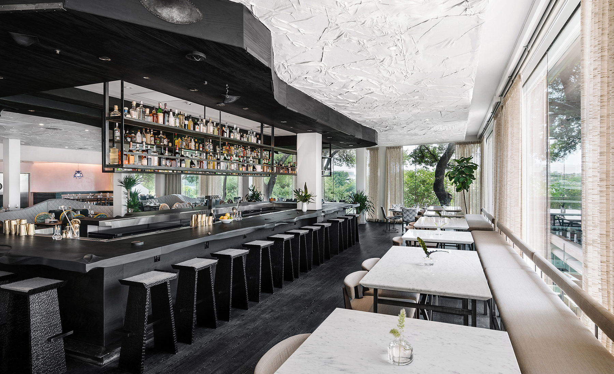

About Us
A eating establishment that provides its customers with a distinctive culinary experience is a synonym of our "Voyage Restaurant". Our restaurant, located in the middle of the city, is known for its French cuisine and attentive service.
We believe that food is meant to be enjoyed and should bring people together. That's why we have created a warm and welcoming atmosphere where you can come and enjoy a meal with friends and family.
At Voyage, we also believe in sustainability and reducing our carbon footprint. That's why we use biodegradable packaging and take measures to reduce food waste.